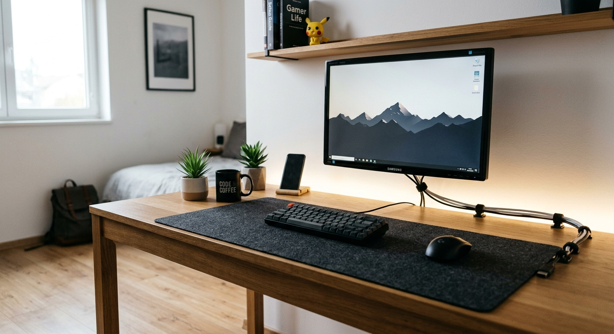

3 itens baratos para deixar o setup bonito e organizado
Cauan
Um setup agradável depende muito mais de organização do que de peças caras. Com um desk mat (mousepad grande) para padronizar a mesa, uma fita de LED simples atrás do monitor e abraçadeiras de velcro para esconder os fios, o visual do seu canto muda completamente sem pesar no bolso.